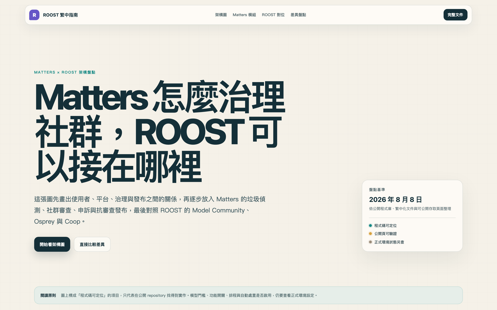

TWNIC 網路社群計畫成果發表會 ／ 2026.08.28
從 Matters 誤封事件，談平台、基礎設施與公共治理
輪到 Matters 被封鎖，
我們才知道一封通知
會不會真的抵達。
2025 年春節，台灣使用者連續三天無法連線
來源：本次任務提供的 Matters 內部事件紀錄
貼上 Matters 站內文章網址
數位產業署收件、去重與分案
目的事業主管機關確認詐騙
標的從文章網址轉成 matters.town
形式審查、更新 RPZ 區域
14 家直連、61 家沿用上游
警示頁或整站無法連線
來源：數產署詐騙網站即時警示說明；DNS-RPZ 治理研究；Matters 事件紀錄
來源：我的 E 政府服務說明；數產署 LINE 通報規則與 2025/08/24–30 週報；Matters 事件紀錄
來源：TWNIC 2026H1 透明度報告與 NCC IASP 統計，整理見 pro.mashbean.net DNS-RPZ 研究
來源：《運用 DNS RPZ 自律機制停止解析違法網站處理參考程序》與研究整理
站方平常會處理詐騙檢舉；這次沒有收到可追蹤、可驗證的移除通知。
正式申訴管道找不到承辦，最後靠私人關係解除；事後詢問損失救濟也沒有結果。
來源：本次任務提供的 Matters 內部事件紀錄
通知、理由、申訴與回復，應該出現在每一層治理。
文章、留言、帳號與集團的治理現場
演算法、閾值與營運流程被視為商業機密；公開也擔心被攻擊者繞過。
缺資料、缺法遵、缺審查人力；連日常清運都吃緊，更難寫透明度報告。
但只有開放，治理規則才可能被公共討論、交叉檢驗與共同改進。
什麼算垃圾？何時只是降權，何時需要凍結？
模型、集團偵測、里長室、守望相助與稽核。
去識別後釋出 42.6 萬筆真實平台 spam 語料。
誤判、申訴、歷史資料缺口與還沒補完的程序。
來源：governance.matters.town；spam-detection-scaffold；Matters Spam Dataset
來源：governance.matters.town；spam-detection-scaffold 進度與模型報告
賭博、色情、藥品、SEO、市場報告與投資導流。
在正常文章下貼聯絡方式、連結與複製文案。
多帳號、近似模板、繁簡變體與小幅改寫繞過逐篇模型。
偽裝成正常教學或救濟資訊，利用受害者想追回損失的急迫感。
來源：平台清道夫公開案例；spam-detection-scaffold PROGRESS_REPORT
原則：先用可回復的手段，讓處置強度跟證據強度一起上升。
來源：spam-detection-scaffold MODEL_UPDATE_REPORT 與 PROGRESS_REPORT
| 公開資料 | 內容與標註 | 規模 | 台灣繁中 | 長文平台 |
|---|---|---|---|---|
| Matters Spam | 去識別平台文章；spam／ham 與部分子類 | 425,689 | ● | ● |
| Chinese conversation + spam | 中文 Telegram 對話與反垃圾機器人紀錄；0／1 二元分類 | 約 1 萬 | — | 對話 |
| Chinese spam 10k | train／dev／test 三個 CSV；資料卡未交代來源與標註方法 | 約 1 萬 | 未說明 | 未說明 |
| Cofacts 台灣查核訊息 | 群眾協作查核訊息；任務是查核與回應 | 1,790 萬 | ● | 訊息 |
來源：Hugging Face 公開資料檢索（2026-08-25）；此表為代表性比較，不宣稱涵蓋私有資料
來源：Hugging Face dataset-server 全部三個 split 統計，擷取 2026-08-25
DNS、iWIN、電商與 Matters 的四種處置模式
來源：DNS-RPZ 研究；iWIN 2025 Q2 統計；數產署電商防詐雷達；平台清道夫
| 面向 | DNS-RPZ | iWIN | 電商防詐雷達 | Matters |
|---|---|---|---|---|
| 判斷單位 | 網域 | URL／內容案件 | 商品刊登 | 文章／留言／帳號／集團 |
| 決定者 | 主管機關；TWNIC 形式審查 | iWIN 分類與分流；業者回應 | 政府雷達提供訊號；平台執行 | 模型、站務、社群分層決定 |
| 主要效果 | 台灣預設 DNS 整站不可達 | 通知改善、轉案或黑名單 | 預防性商品下架 | 可見度限制到帳號凍結 |
| 事前通知 | 網域持有人不在公開受文者 | 典型作法是通知業者改善 | 平台收到高風險清單 | 依場景通知作者／成員 |
| 救濟 | 多在生效後申訴 | 依案件與業者管道而異 | 依平台規則而異 | 可申訴、覆核、恢復 |
| 透明度 | 半年統計，缺駁回與通知欄位 | 月／季案件統計 | 週報公開掃描與高風險數 | 公開稽核、模型與 H1 報告 |
比較範圍：典型公開流程；個案程序仍依機關與業者而異
概念比較：位置顯示程序特性，未做量化評分
揭露內容調控、政府與第三方要求、申訴結果、自動化與重大政策變更。
把管道、時限、理由、覆核、結果通知與可近性變成可操作要求。
來源：NCC 兩指引；平台清道夫逐條合規自評；本地 41 點工作稿
來源：governance.matters.town/reading/ncc-41-checklist；Matters 2026 H1 公開文字
從事件資料自動彙整期間、理由、處置與結果。
管道、時限、必填資料、覆核與結果通知。
28 面向與 41 個落地檢核點可持續追蹤。
只輸出去識別、聚合資料，拒收原始內容與身分欄位。
來源：本地下一期 TWNIC 前期研究備忘；open-safety-tw/moderation-audit-toolkit

來源：roost.mashbean.net；roost.mashbean.net/matters-roost.html
業者之間、使用者之間如何合作
先共用風險訊號、處置資料格式與申訴介面。
不同的治理議題能否共享方法
內容、帳號、平台與 DNS 都需要通知、理由、申訴與回復。
哪些東西可以博採眾長？
繁中化 ROOST，也讓國際社群看見台灣處理 spam、詐騙與多方治理的經驗。
公開成果：governance.matters.town · huggingface.co/datasets/thematters/matters-spam · roost.mashbean.net